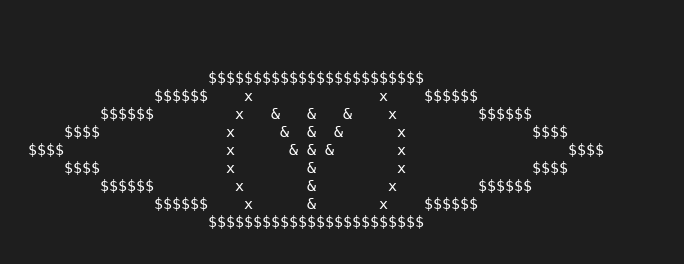

DeByte: A distro Linux em CLI
Olá caro visitante! Você percebe que eu falo muito do Linux por aqui, mas... Recentemente fiquei muito pensativo
e queria me aprofundar no Linux de uma forma que eu ficasse bem próximo e então eu decidi criar uma distro Linux
mas não qualquer distro e sim uma distro baseada em Debian.
O que é o DeByte?:
O DeByte é uma distro Linux baseada em Debian que é CLI puro, no caso tudo é movido em base de comando, mas claro que
funciona o GUI normalmente, mas só quando necessário, então por exemplo: Quando você abrir o firefox ele irá abrir
normalmente a interface gráfica do firefox, então não, ele não irá "eliminar" a interface gráfica, ela só será menos usada
afinal, o sistema inteiro tem como objetivo ser leve, funcional e ainda por cima com foco em privacidade.
Logo do DeByte, nome e significado:

Nome da logo: YOU
Significados:
Olho: O olho significa que você vê o seu sistema por trás de tudo, você tem controle do sistema, você é o olho que tudo vê.
Pupila com a runa de algiz: A runa de Algiz na mitologia nórdica significa proteção divina e algo relacionado a natureza.
Significado do nome DeByte:
Deb --> Baseado em Debian
Byte --> A forma como o computador enxerga os dados, arquivos, pastas, aplicativos e etc.
O motivo do porque escolhi esse nome: Porque simplesmente, além de eu amar computadores e querer me sentir próximo, o Math's Information
não é só meu diário técnico, mas sim uma forma de ajudar pessoas a se conectar ao hardware e compreender profundamente o computador.
Aplicativos que terá no DeByte:
cmus --> Player de música em CLI
mutt --> Cliente de email em CLI
Firefox --> Navegador padrão
Tor browser --> Segundo navegador com foco em privacidade.
ufw --> Firewall para proteção básico para o user
torsocks --> Se caso o user quiser forçar softwares a usar a rede tor
htop --> Gerenciador de tarefas em CLI
i3 --> WM do sistema
Tilix --> Terminal principal
xterm --> Terminal para recuperar o sistema caso você quebre
irssi --> IRC em CLI
i3status --> Barra de status
rofi --> Launcher de menu de aplicativos (Para facilitar para as pessoas que não gostam de comandos)
Como a distro funciona?:
Basicamente... Na primeira vez após você instalar e preencher user e senha... Irá aparecer para você o tty que bem... É o login aqui no
DeByte que após você preencher user e senha que você criou, simplesmente ele te leva imediatamente pro terminal e não o DeByte não possui
área de trabalho, diferente de muitos, ele abre de imediato no terminal, o terminal é sua área de trabalho e bem mesmo se você fechar o Terminal
ele mostra apenas uma tela preta.
Atalhos do DeByte:
Aviso: A tecla "mod" é na verdade a tecla windows ou também conhecida como a tecla "super"
mod + Shift + E --> Desliga o computador (mas você pode usar o comando "shutdown" que ele desliga o computador de imediato)
mod + Shift + R --> Reinicia o computador
mod + enter --> Abre o terminal
mod + Shift + Q --> Fecha a janela
Instalação:
No momento o DeByte fica no modo live system, no caso você pode mexer no sistema operacional sem precisar instalar o sistema, então sim, relaxa
você não precisa vir pra algo tão complexo se não quiser, entretanto, você pode testar sem ter perigo de formatar tudo, mas, você pode instalar o
DeByte usando o comando "debyte-install" que irá usar um script que instala o DeByte no seu HD ou SSD, nada muito complicado.
Objetivos e público alvo do DeByte:
O DeByte além de possuir o objetivo de ser leve, funcional e ainda focado em privacidade, ele também tem como objetivo ser prático e produtivo, muitas vezes
com o objetivo de facilitar a produtividade de projetos ou também servir como servidor e claro feito para ser leve tanto para pessoas que estão estudando ou trabalhando
com programação e hacking ético, mas sim o DeByte pode ser usado para usos domésticos.
O público alvo principal do DeByte são: sysadmin, programadores, estudantes de programação ou hacking ético, hacktivistas, técnicos de cybersegurança, devs de servidores
e jornalistas, mas não se sinta mal, afinal o DeByte mesmo tendo esses públicos alvos, ainda sim pode ser usado para usos domésticos ou como aprendizado.
Aviso: A ISO não foi feita ainda, a distro Linux está sendo desenvolvida e testada diversas vezes, por favor aguardar.